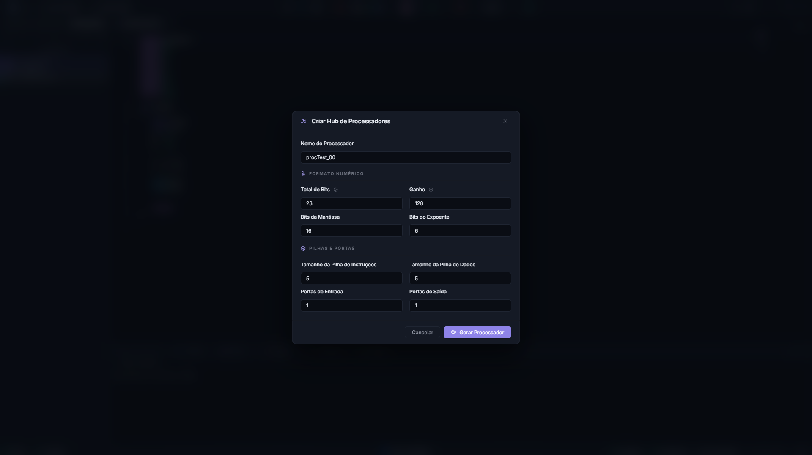
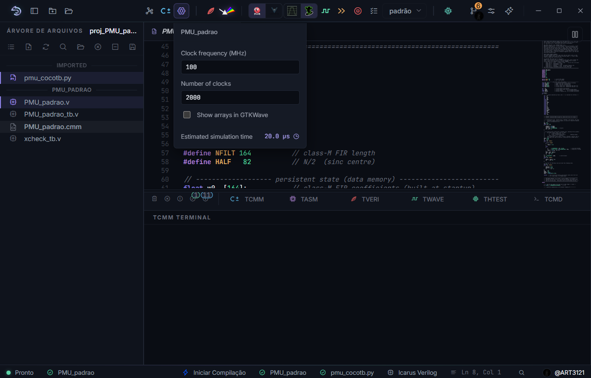

Criar e configurar processadores¶
Um processador reúne o algoritmo C±, a configuração de arquitetura e as pastas nas quais o hardware gerado será gravado. Esta página cobre as duas formas de criar um, o significado de cada campo do formulário, os ajustes de simulação e as operações de renomear e excluir.
Se você ainda não criou nenhum, faça primeiro o Primeiro projeto: um filtro de média móvel, que percorre o caminho completo com um exemplo.
O Hub de Processadores¶
Com o projeto aberto, o botão Hub de Processadores da barra superior abre o formulário que dá vida a um novo processador.
{kind=link}

Figura 22 O formulário pede o nome e, em duas seções, os parâmetros numéricos. A validação acontece enquanto você digita.¶
Campo |
Diretiva |
Padrão |
Validação |
|---|---|---|---|
Nome do Processador |
|
|
Letras, números, sublinhado e hífen |
Total de Bits |
|
23 |
Inteiro positivo, igual a mantissa mais expoente mais um |
Ganho |
|
128 |
Inteiro positivo, potência de dois |
Bits da Mantissa |
|
16 |
Inteiro positivo |
Bits do Expoente |
|
6 |
Inteiro positivo |
Pilha de Instruções |
|
5 |
Inteiro positivo |
Pilha de Dados |
|
5 |
Inteiro positivo |
Portas de Entrada |
|
1 |
Inteiro positivo |
Portas de Saída |
|
1 |
Inteiro positivo |
Um campo inválido ganha borda vermelha e uma dica explicando a regra, e o botão Gerar Processador só habilita quando tudo está consistente. Note que o padrão de fábrica já respeita a igualdade estrutural, pois \(23 = 16 + 6 + 1\).
Como escolher os valores¶
O total de bits dimensiona os inteiros e o consumo de hardware. Dezesseis bits bastam para muitos sinais de instrumentação, enquanto o padrão de 23 dá folga com um float de boa precisão.
A mantissa e o expoente definem a precisão e a faixa do ponto flutuante. Se o programa só usa inteiros, esses valores têm pouco efeito prático, mas a igualdade estrutural continua obrigatória. Veja O ponto flutuante do SAPHO.
A pilha de instruções limita a profundidade de chamadas de função aninhadas, e a de dados, a complexidade das expressões. Os padrões atendem programas típicos.
Reserve uma porta para cada fluxo de dados que o processador troca com o mundo, e lembre que o ganho só importa se o programa usa a função norm().
Perigo
A validação que mais reprova O total de bits precisa ser exatamente a soma da mantissa, do expoente e do bit de sinal. Se o botão não habilitar, confira essa conta antes de mexer em qualquer outro campo.
O atalho $cmm¶
Existe um caminho mais rápido quando você já sabe o que quer:
Use Ctrl+N para criar um arquivo
Untitled-N.Digite somente
$cmm.Aguarde a AURORA expandir o modelo inicial do algoritmo C±.
Use Ctrl+S e informe o nome do processador.
Ao salvar dentro de um projeto aberto, a AURORA atualiza a diretiva #PRNAME, registra o processador no .spf e cria a estrutura de pastas. O arquivo é gravado em Software e passa a aparecer como processador do projeto.
O atalho usa os valores de fábrica das diretivas; ajuste-as no próprio arquivo se precisar de outra configuração.
O que é gerado¶
Ao confirmar, a AURORA cria dentro do projeto a pasta do processador com as três subpastas de trabalho e registra o novo processador no .spf, bloqueando nomes duplicados.
<processador>/
├── Software/ o algoritmo C± editável, e depois o assembly gerado
├── Hardware/ o Verilog e as imagens de memória, gerados
└── Simulation/ o testbench gerado, os estímulos e as saídas
O arquivo Software/<nome>.cmm nasce com o cabeçalho de diretivas preenchido com os valores do formulário e um main() vazio à sua espera:
#PRNAME media_movel
#NUBITS 16
#NDSTAC 5
#SDEPTH 5
#NUIOIN 1
#NUIOOU 1
#NBMANT 10
#NBEXPO 5
#NUGAIN 128
void main()
{
// Ok. Voce criou um processador em C+-, mas e agora?
}
O “e agora” é A linguagem C±: fundamentos.
O processador ativo¶
A AURORA deduz o processador ativo do arquivo .cmm em foco no editor, e o nome aparece na barra de status. É esse processador que os botões de compilação e de teste vão usar.
Se o botão Compilar C± estiver desabilitado, confirme nesta ordem:
o projeto está aberto;
o arquivo
.cmmdo processador está aberto e em foco;nenhuma compilação está em andamento.
Configurações de simulação¶
Ao lado do botão de compilar há uma engrenagem que abre um painel com três ajustes por processador.
{kind=link}

Figura 23 O painel ajusta a frequência, o limite de ciclos e a inclusão de vetores nas formas de onda. O tempo estimado é recalculado a cada mudança.¶
- Frequência de clock
Em MHz, padrão 100. Define a temporização do testbench gerado.
- Número de ciclos
Padrão 2000. É quantos ciclos a simulação executa antes de encerrar.
- Exibir cada elemento de vetor
Emite cada posição de vetor como um sinal visível nas formas de onda, equivalente à opção
--arraydo compilador. Útil para depurar filtros; caro em vetores grandes.
O painel também exibe o tempo estimado de simulação, os ciclos divididos pelo clock, em microssegundos.
Dica
O sintoma mais comum de todos Se a simulação termina antes de o programa produzir os resultados, aumente aqui o número de ciclos. É a primeira coisa a verificar quando a onda abre vazia ou incompleta.
Gerar o hardware¶
Abra o arquivo
.cmme salve as alterações.Clique em Compilar C±.
Acompanhe os terminais TCMM e TASM.
Confirme que os arquivos apareceram ou foram atualizados em
Hardware.
Leia primeiro o TCMM e depois o TASM. O processo deve terminar sem erro antes que os arquivos em Hardware sejam considerados atualizados.
Aviso
Um arquivo antigo em Hardware não comprova que a compilação atual passou. Se a geração falhar, preserve a primeira mensagem de erro para o diagnóstico; as seguintes costumam ser consequências dela.
O detalhamento de cada etapa da cadeia está em Compilação: de C± a Verilog.
Testar o processador isoladamente¶
O botão Teste do processador sintetizado valida o processador como caixa-preta: um harness em C++ construído com o Verilator alimenta as portas de entrada e confere as saídas, sem despejo de ondas, com barra de progresso no terminal THTEST.
Use quando quiser confirmar rapidamente que as portas respondem e que o programa termina, sem montar uma inspeção completa no visualizador. Para detectar o fim do programa, a AURORA usa o mecanismo do #TOAQUI e do pino cheguei, inserindo o marcador ao final do main() quando necessário.
Renomear e excluir¶
Ambas as operações ficam no menu de contexto do processador na árvore.
Renomear é uma operação completa: a pasta é movida, os artefatos gerados são renomeados e a diretiva #PRNAME dentro do fonte é corrigida, tudo em uma só ação, sob as mesmas regras de nome do formulário.
Excluir remove a pasta do processador e o registro no .spf. Faça backup antes e leia a confirmação.
Importante
O nome do processador e a diretiva #PRNAME precisam concordar: é assim que a cadeia de ferramentas conecta o fonte aos artefatos. Renomeie sempre pela AURORA, que mantém os dois lados em sincronia. Renomear pastas pelo Explorador de Arquivos deixa referências inválidas no .spf.
Vários processadores no mesmo projeto¶
Um projeto pode conter quantos processadores forem necessários, cada um com a sua pasta, o seu fonte e os seus parâmetros. O padrão de projeto do SAPHO é justamente esse: em vez de uma máquina grande que faz tudo, várias máquinas pequenas, uma por tarefa, integradas por um top-level em Verilog.
O raciocínio de arquitetura por trás dessa escolha está em O processador SAPHO por dentro, e a integração dos módulos, em Arquivos Verilog e Testbenches.